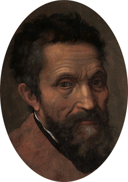

미켈란젤로 부오나르티

전성기 르네상스를 대표하는 조각가이자 화가인 미켈란젤로 부오나로티는 1475년 피렌체 부근의 카프레제에서 태어났다.
아버지의 반대가 있었음에도 열세 살의 나이에 당시 피렌체의 유명한 화가였던 기를란다요(Ghirlandaio)의 공방에 들어갔고,
조토와 마사초의 그림을 모사했다. 메디치 가문의 조각 컬렉션의 관리자이며 도나텔로의 제자였던 베르톨도 밑에서 조각을 공부했고,
로렌초 일 마니피코(Lorenzo il Magnifico)의 눈에 들어 메디치 저택에 머물며 신플라톤주의 철학자들과 교류했다.
1492년 로렌초가 세상을 떠나자 베네치아와 볼로냐를 거쳐 1496년에 로마에 정착했다.
프랑스 출신의 추기경의 주문으로 완성된 피에타로 유명해진 미켈란젤로는 1504년 피렌체로 돌아와 초기 걸작인 다윗을 제작했다.
1508년부터 1512년까지 교황 율리우스 2세의 주문으로 바티칸 궁의 시스티나 예배당 천장에 그림을 그렸다.
1520년에는 피렌체의 메디치 가문의 산 로렌초 성당의 건축과 조각을 맡았고 1524년에는 라우렌치아나 도서관을 설계했다.
1536년에 교황 바오로 3세의 주문을 받아 1541년에 시스티나 예배당의 벽화 최후의 심판을 완성했다.
미켈란젤로는 노년에도 로마 캄피돌리오 광장을 설계하고 성 베드로 성당 건축에 참여하는 등 왕성하게 활동했으며, 1564년 89세의 나이로 세상을 떠났다.